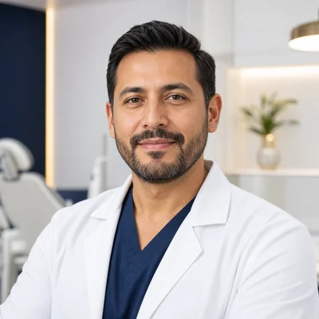
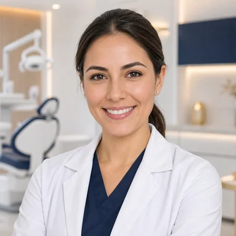
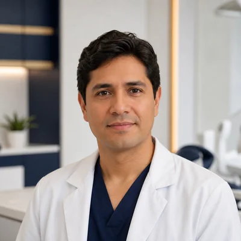
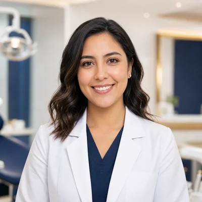

Atención confiable
Procesos claros y profesionales especializados.
Quiénes somos
SmartDent es una propuesta de clínica odontológica integral que conecta pacientes y especialistas mediante una experiencia digital clara, segura y humana.
Nuestra historia
El proyecto nació para resolver la gestión manual de citas, pacientes y tratamientos. SmartDent reúne la información necesaria en una sola plataforma y facilita la comunicación entre pacientes, odontólogos y administración.
La clínica combina atención personalizada con herramientas digitales para reducir tiempos de espera y ofrecer seguimiento continuo.
Procesos claros y profesionales especializados.
Reservas y seguimiento desde cualquier dispositivo.
Escuchamos las necesidades de cada paciente para brindar una atención cercana.
Misión
Ofrecer atención odontológica integral y accesible mediante profesionales capacitados y procesos digitales eficientes.
Visión
Convertirnos en una propuesta reconocida por su calidad clínica, innovación tecnológica y confianza.
Valores
Trabajamos con empatía, responsabilidad, transparencia, innovación y respeto por cada persona.
Equipo clínico
Profesionales de diferentes áreas para ofrecer diagnósticos y tratamientos integrales.

Implantología y Cirugía Oral

Estética y Ortodoncia

Endodoncia Microscópica

Periodoncia y Odontopediatría